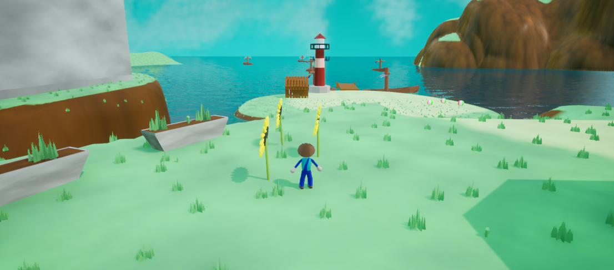

Enterra
Enterra is a 3D platformer in the style of Super Mario 64, where the player explores areas to find items to progress through the game. A big focus on the game was making sure the movement was smooth and enjoyable.

Enterra is a 3D platformer in the style of Super Mario 64, where the player explores areas to find items to progress through the game. A big focus on the game was making sure the movement was smooth and enjoyable.
A walk in the park is a piece of music that will always be random. This piece has some performative aspects where the player is given random instructions.
The melody, harmony, and rhythm of this piece is completely randomized, having an AI write the music on the spot.
Marching Mapper is a tool to create marchng band drill. It can print dot cards, show a 3D view, and sync to music.


Based on the novel by Willian Golding. This game takes the book into a new perspective. Featured on the front page of Gamejolt, this was one of my first big milestones in programming. It's not perfect, but an interesting thing I programmed in early high school.